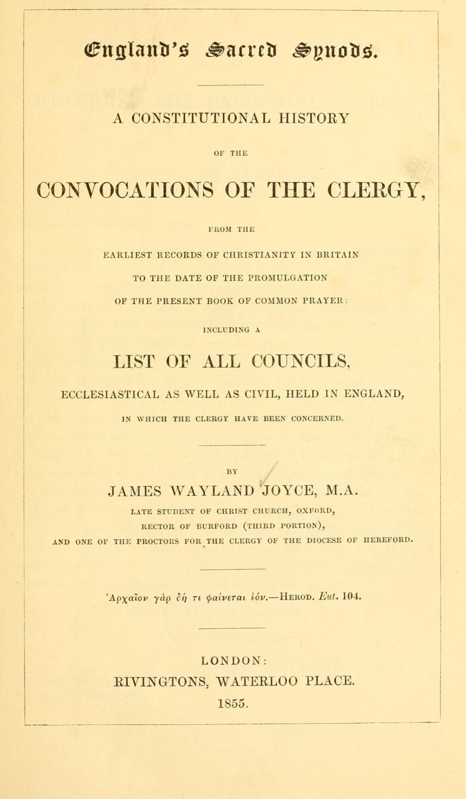
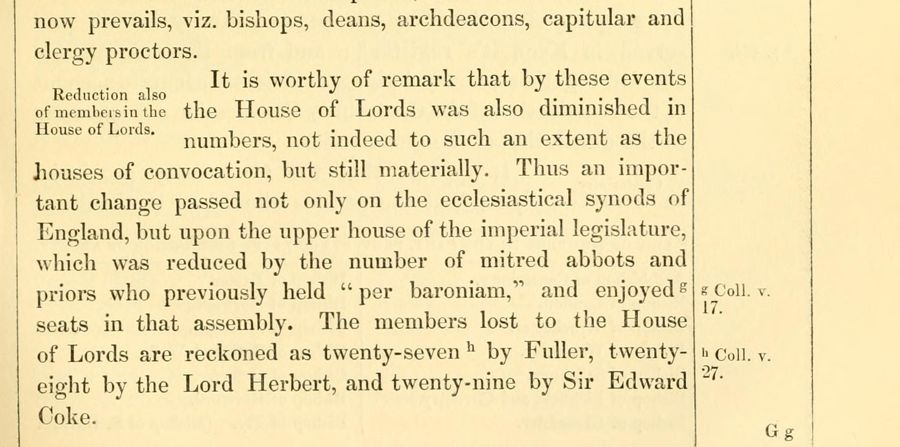

The abbots lost to the House of Lords (p. 449)
English: 1855, ch. XI, p. 449, scan n460; under the year 1546. Side-note: “Reduction also of members in the House of Lords.” Highlighted: the sentence Lecky reproduces.

It has been thought right to dwell thus at some length upon the dissolution of the abbeys and monasteries as being a subject intimately connected with our present inquiry. For from this act a diminution in the number of the members of our provincial synods ensued. Those assemblies, before composed of bishops, abbots, priors, deans, archdeacons, capitular and clergy proctors, were now reduced, with but inconsiderable exceptions, to the standard which now prevails, viz. bishops, deans, archdeacons, capitular and clergy proctors.
It is worthy of remark that by these events the House of Lords was also diminished in numbers, not indeed to such an extent as the houses of convocation, but still materially. Thus an important change passed not only on the ecclesiastical synods of England, but upon the upper house of the imperial legislature, which was reduced by the number of mitred abbots and priors who previously held “per baroniam,” and enjoyedg seats in that assembly. The members lost to the House of Lords are reckoned as twenty-sevenh by Fuller, twenty-eight by the Lord Herbert, and twenty-nine by Sir Edward Coke.
g Coll. v. 17. h Coll. v. 27.
Lecky (vol. II, ch. V, text at note 24): “Fuller has reckoned at twenty-seven, Lord Herbert at twenty-eight, and Sir Edward Coke at twenty-nine, the number of mitred abbots and priors who by this measure lost their seats in the House of Lords.”
Further down the rabbit hole
Sources that Lecky cites in the notes next to the ones that cite this page.
- Buckle, History of Civilization in EnglandWeather and credulity, and the Scottish clergy’s Devil who had been studying for five thousand years
- The Life of the Rev. Joseph Blanco WhiteSouthey explains the Whigs: Fox “is said to have died an unbeliever”
- Gladstone, The State in its Relations with the ChurchThe future Liberal prime minister’s defence of a Church-and-State Toryism
- Ventura, Le pouvoir politique chrétienOne religious journal in Catholic Austria
- Allen, Inquiry into the Rise and Growth of the Royal PrerogativeAn oath of non-resistance that outlived the Revolution by some thirty years
- An Homily against Disobedience and Wilful RebellionHell as the prison of rebels: the Church of England preaches obedience


Backlinks
Every place in Rationalism in Europe that links to this page (generated automatically when the site is built).
- Chapter V: note 24